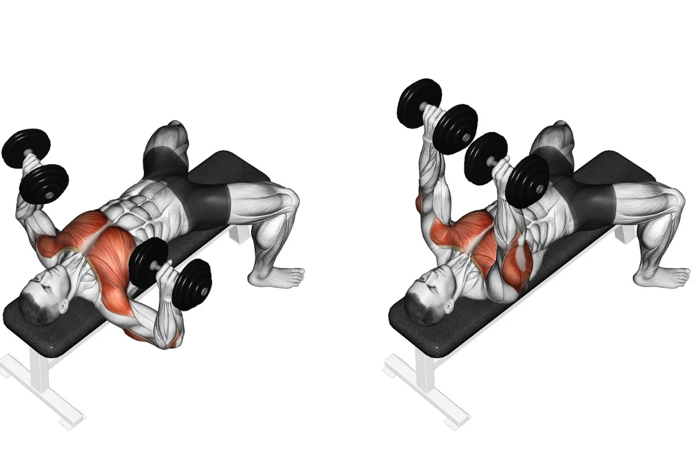
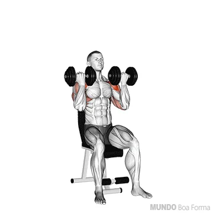
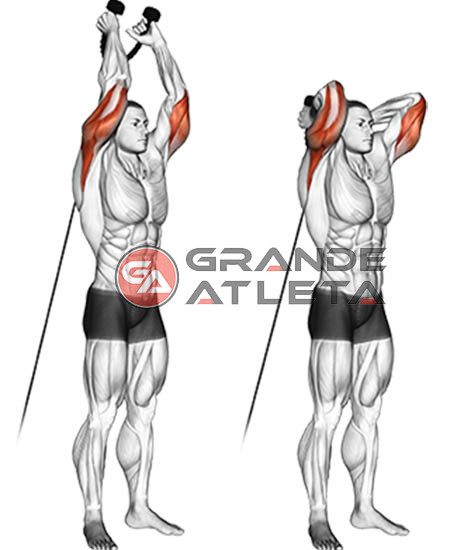

PUXADA ALTA COM TRIANGULO "PEGADA NEUTRA" - 4X/15/12/10/8.
Aumentar a carga em cada serie, seguear 2 segundos em baixo.

REMADA SUPINADA BARRA RETA NA POLIA BAIXA - 4X15
Segure 1 segundo no pico quando puxar.

SUPINO RETO COM HALTERES - 3X12.
Foque na execução, controle o ritmo Sem Correr.
DESENVOLVIMENTO ARNOLD PRESS - 3X12 + ELEVAÇÃO FRONTAL ALTERNADA COM HALTERES - 3X10.

TRICEPS CORDA NA POLIA - 4X15 + ROSCA DIRETA ALTERNADA - 4X12.
Pico de contração de 2 segundos quando esticar e Drop Set em todas as series.


TRÍCEPS FRANCES NA POLIA MEDIA - 4X10.
Coloque a polia na altura da cintura.
